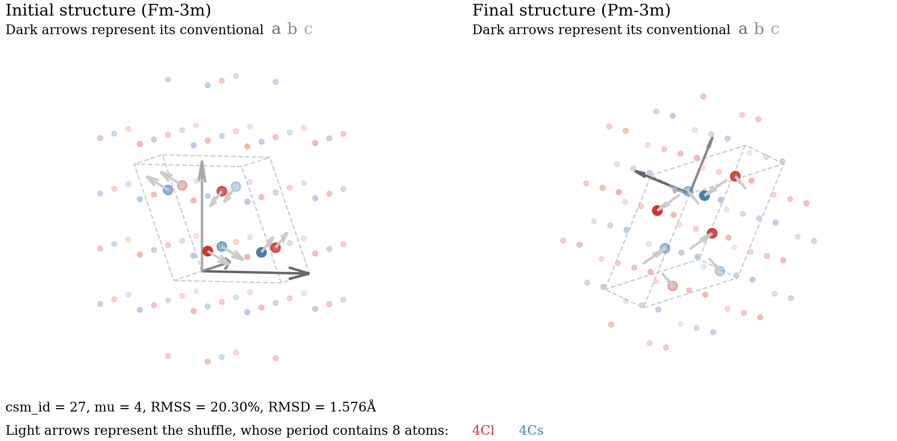

Tutorial
Abstract
A solid-solid phase transition establishes an atom-to-atom correspondence between the initial and final crystal structures \(\mathcal A\) and \(\mathcal B\). Such correspondence is called a crystal-structure match (CSM). A CSM can be described by a pair of POSCAR files, which specifies how the lattice deforms from \(\mathcal A\) to \(\mathcal B\) and the correspondence between atoms in a supercell of \(\mathcal A\) and those in \(\mathcal B\).
The main functions of crystmatch are as follows:
-
Enumeration:
- Provide a complete list of representative CSMs between \(\mathcal A\) and \(\mathcal B\), with user-specified upper bounds on the multiplicity and strain.
- Provide a complete list of CSMs with user-specified upper bounds on the multiplicity, strain, and shuffle distance.
-
Analysis:
- Read a CSM from a pair of POSCAR files, and save CSMs in the same format.
- Calculate the root-mean-squared strain (RMSS), estimated strain energy density, and shuffle distance (RMSD) for each CSM.
- Benchmark each CSM by its deviation angle from a given orientation relationship.
- Visualize the distribution of strain, shuffle distance, and multiplicity of CSMs in a 2D scatter plot.
- Visualize a CSM in a 3D interactive plot.
Congruent CSMs (those differ only by a space-group transformation) are identified and excluded from the enumeration using the Spglib library by Atsushi Togo et al.
Installation
Make sure you have Python 3.9 or later installed. You can check it by running:
python3 --version
To install the latest version of crystmatch, run:
pip3 install --upgrade numpy scipy spglib numba matplotlib
pip3 install --upgrade crystmatch
Check whether crystmatch is successfully installed (the first run may take a few minutes to compile the required modules):
crystmatch --version
The current version of crystmatch is 2.0.3.
Tip
If you prefer using conda, you can install crystmatch by running:
conda install conda-forge::crystmatch
How to cite
If you use crystmatch in your research, please cite one of the following paper:
-
Crystal-Structure Matches in Solid-Solid Phase Transitions
Physical Review Letters 132, 086101 (2024)
@article{wang2024crystal, title={Crystal-Structure Matches in Solid-Solid Phase Transitions}, author={Wang, Fang-Cheng and Ye, Qi-Jun and Zhu, Yu-Cheng and Li, Xin-Zheng}, journal={Phys. Rev. Lett.}, volume={132}, number={8}, pages={086101}, year={2024}, publisher={APS}, doi={10.1103/PhysRevLett.132.086101} } -
Classification and Enumeration of Solid-Solid Phase Transition Mechanisms
Under review (2025)
@article{wang2025classification, title={Classification and Enumeration of Solid-Solid Phase Transition Mechanisms}, author={Wang, Fang-Cheng and Ye, Qi-Jun and Zhu, Yu-Cheng and Li, Xin-Zheng}, journal={arXiv preprint arXiv:2506.05105}, year={2025}, doi={10.48550/arXiv.2506.05105} }
Usage
To run crystmatch, one of the following modes must be selected:
-
--enumerateEnumerate a list of CSMs, save them to a
CSMLIST.npzfile, and perform preliminary analysis. The initial and final crystal structures must be specified in two separate POSCAR files. -
--readRead CSMs from a
CSMLIST.npzfile. You can export specific CSMs to POSCARs or XDATCARs, perform orientation-relationship analysis, and visualize them interactively. -
--directDirectly determine a single CSM by two POSCAR files (must have the same number of atoms) and perform detailed analysis.
We strongly recommend starting with the examples provided below, and then see all available options. To see the help message, run:
crystmatch --help
Examples
Enumerating representative CSMs
To enumerate a list of representative CSMs (each representing a unique deformation) between two crystal structures given by POSCAR files Graphite and Diamond, with upper bounds MAX_MU = 2 for multiplicity and MAX_STRAIN = 0.4 for RMSS, run:
crystmatch --enumerate Graphite Diamond 2 0.4
Caveat
We recommend you to try MAX_MU = 2 and MAX_STRAIN = 0.4 first, and then gradually adjust these upper bounds, usually by increasing MAX_MU and decreasing MAX_STRAIN, to obtain desired results. Otherwise, the enumeration may take a very long time, or find no CSMs at all.
Suggestion
If you are using a job scheduling system such as SLURM on a remote server, you can redirect the output of crystmatch to a log file and monitor the progress in real time using:
crystmatch --enumerate Graphite Diamond 2 0.4 > log
The following files will be created in the current directory:
./
├── CSMLIST-m2s0.4.npz # stores the enumerated CSMs and metadata
├── SUMMARY-m2s0.4.csv # lists the multiplicity, RMSS, and RMSD
└── SCATTER-m2s0.4.pdf # shows the RMSD-RMSS distribution of the CSMs
Here, CSMLIST-m2s0.4.npz contains all information of the enumerated CSMs and SLMs, but is not intended to be human-readable. SUMMARY-m2s0.4.csv look like this:
# ./SUMMARY-m2s0.4.csv
# csm_id, slm_id, mu, period, rmss/%, rmsd/Å
0, 0, 1, 4, 21.28, 0.4788
1, 1, 1, 4, 26.20, 0.6833
2, 2, 1, 4, 30.47, 0.4884
3, 3, 1, 4, 36.85, 0.7826
4, 4, 1, 4, 37.89, 0.5036
5, 5, 1, 4, 39.79, 0.7856
6, 6, 2, 8, 14.34, 0.9107
7, 7, 2, 8, 19.50, 0.8152
SCATTER-m2s0.4.pdf visualizes the RMSD-RMSS-multiplicity distribution of the CSMs.
Enumerating all CSMs
To enumerate all CSMs (representative and nonrepresentative) between two crystal structures given by POSCAR files Graphite and Diamond, with upper bounds MAX_MU = 2 for multiplicity, MAX_STRAIN = 0.4 for RMSS, and MAX_D = 1.8 for RMSD, run:
crystmatch --enumerate Graphite Diamond 2 0.4 --all 1.8
The following files will be created in the current directory:
./
├── CSMLIST-m2s0.4d1.8.npz # stores the enumerated CSMs and metadata
├── SUMMARY-m2s0.4d1.8.csv # lists the multiplicity, RMSS, and RMSD
└── SCATTER-m2s0.4d1.8.pdf # shows the RMSD-RMSS distribution of the CSMs
Caveat
Using --all MAX_D with large MAX_MU may result in a very large number of CSMs. We recommend you to try MAX_D = 1.2 first, and then gradually increase it to obtain desired results.
If you wish to apply weighting to atomic species when calculating RMSD, prepare a CSMCAR file and use the --extra option. See CSMCAR for details.
Visualizing CSMs in a 3D interactive plot
If you are using crystmatch in a local terminal, you can visualize the CSMs in a 3D interactive plot by adding the --interact option, as shown below. You can rotate and zoom the plot using your mouse or touchpad.

However, using --interact in --enumerate mode might be unwise, as you would have to visually inspect numerous CSMs one by one. The recommended workflow is:
- Perform enumeration (using
--all MAX_Dor not), generatingSCATTER.pdf,SUMMARY.csv, andCSMLIST.npz. - See
SCATTER.pdfand roughly note the RMSS and RMSD values of CSMs of interest. - Identify the corresponding
csm_idvalues for these CSMs inSUMMARY.csv, e.g.,1,14,514. -
Read these CSMs from
CSMLIST.npzusing--read CSMLIST [IND1 IND2 ...], e.g., run:crystmatch --read CSMLIST.npz 1 14 514 --interact
Suggestion
You can enumerate CSMs on a remote server or WSL, and then download the CSMLIST.npz file to your local machine so that the CSMs can be visualized interactively using --interact.
Exporting CSMs as POSCAR or XDATCAR files
To export CSMs with csm_id values 7 and 10 from CSMLIST.npz as POSCAR files, run:
crystmatch --read CSMLIST.npz 7 10 --poscar
Two folders will be created in ./EXPORT-read/, each containing a pair of POSCAR files representing the CSM:
./EXPORT-read/
├── CSM_7/
│ ├── POSCAR_I
│ └── POSCAR_F
└── CSM_10/
├── POSCAR_I
└── POSCAR_F
You can also export CSMs as XDATCAR files using the --xdatcar option. Both --poscar and --xdatcar are also available in --enumerate and --direct modes.
Identifying CSM from a pair of POSCAR files
To identify and analyze the CSM defined by a pair of POSCAR files POSCAR_I and POSCAR_F, run:
crystmatch --direct POSCAR_I POSCAR_F
You can also --interact to visualize the CSM in a 3D interactive plot, or use --xdatcar to interpolate between POSCAR_I and POSCAR_F.
Important
By default, the fractional coordinates in the POSCAR files will be added and subtracted by integers to optimize the CSM. If you are reading a pair of POSCAR files generated by crystmatch, you should use --literal to disable this behavior. See all options for details.
To enumerate all CSMs with identical initial and final supercells as POSCAR_I and POSCAR_F, but different atomic correspondences, run:
crystmatch --direct POSCAR_I POSCAR_F --all MAX_D
Here, MAX_D should be set to a smaller value if the supercells contain many atoms.
Orientation-relationship analysis
In --enumerate, --read, and even --direct modes, you can perform orientation-relationship analysis by using --orientation ASSUM and --extra CSMCAR. See CSMCAR for details.
Computing estimated strain energy density
If you want to use the estimated strain energy density, rather than the RMSS, to quantify the strain, you should provide the elastic tensors of the initial and final structures in the CSMCAR file.